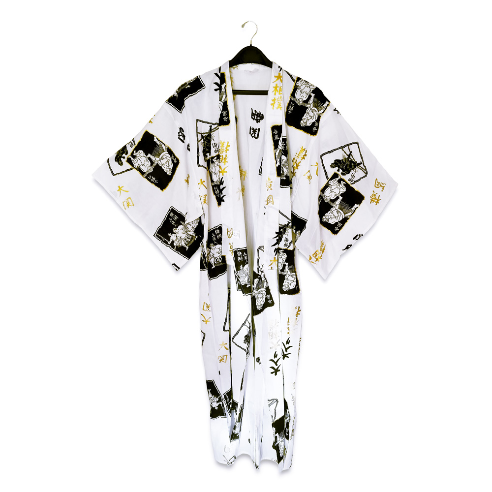
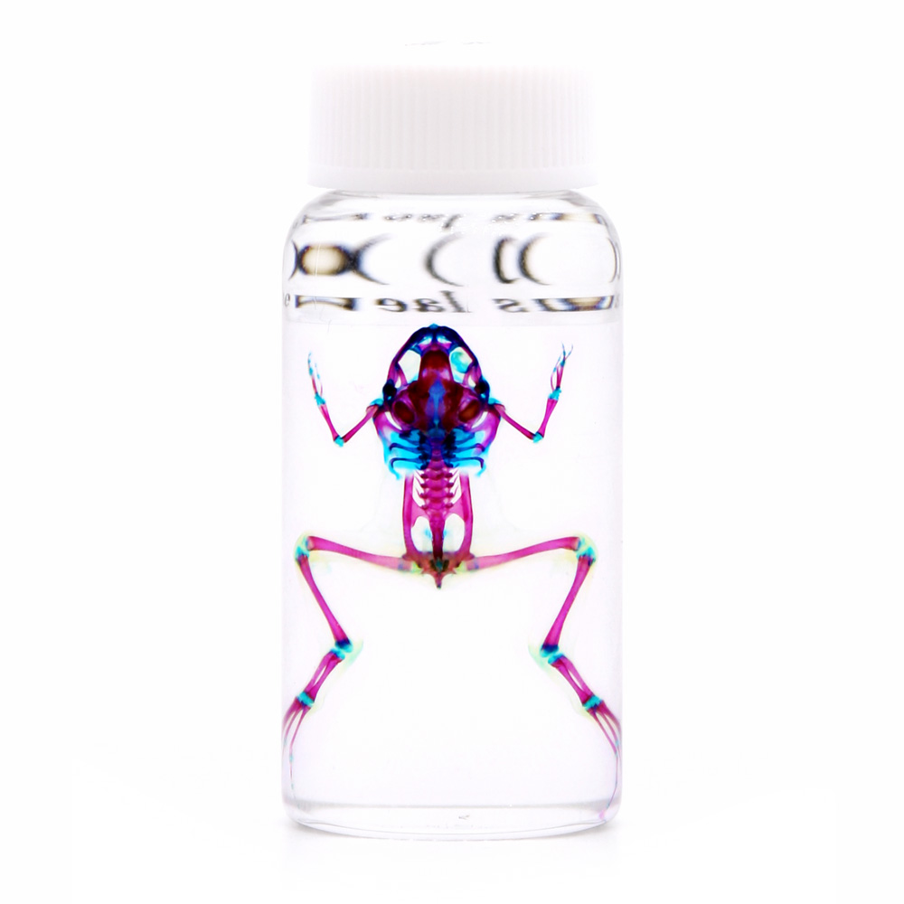

World Map
My Map
Requests
I found something!
I'm looking for
in
Show me
Clusters
Items
Travelers
God-Tier Karuizawa Whisky
in
Kyoto, Japan
#tag #tag #tag #tag #tag

Fancy White & Gold Yukata
in
Kyoto, Japan
$999.99
Ross Gibson, Shogun of Ardefact
in
Tokyo, Japan
South Korea
is next
Lev Neiman, Wanderer of the Wastelands
in
Osaka, Japan
Returning in 3 days
Gourmet Kit Kats
in
Tokyo, Japan
#tag #tag #tag #tag #tag

Diaphonized Specimens by Iori Tomita
in
Tokyo, Japan
$999.99
Show me more!